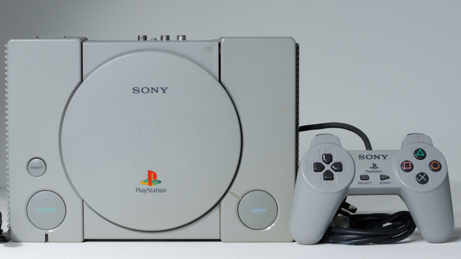

The PlayStation 1 was released in December 3, 1994 and it was a groundbreaking console for the market at the time. The ability to run games with 3D visuals was something the PlayStation 1 had the privilege of pioneering. Along with the visuals, the PS1 (PlayStation 1), was also one of the first consoles to begin using CDs. The PlayStation proved to dominate the competition it had on the gaming market at the time, outselling competition such as the Sega Saturn by a huge margin. While the PS1 marked the first console of its generation, it also marked the spawn of several legendary titles and beginnings of long running series that would follow in the PlayStations legacy. Some of the long catalog of titles that came from the PS1 include games such as "Resident Evil", "Metal Gear Solid", "Grand Theft Auto", "Mortal Kombat", and many more decade defining games. The PlayStation 1 proved to be a strong beginning to what would become arguably the greatest set of consoles.
